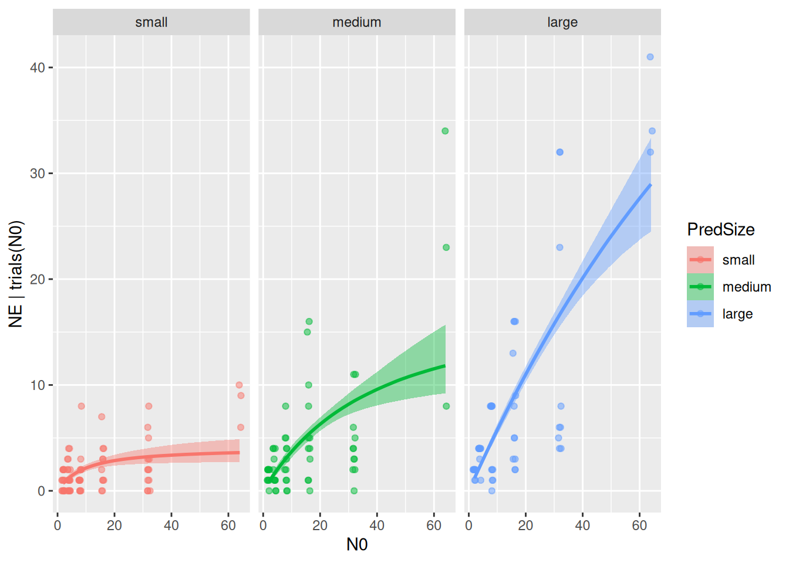

4. Categorical predictors: Predator and prey size classes
brms allows to make model parameters depend on predictors with classical formula notation. To estimate the effect of a continuous variable x (e.g. temperature or body mass) on attack rate, we simply specify a~x in the model formula. Then, the model does not estimate an overall attack rate, but an intercept (attack rate for x=0) and a slope (attack rate increase with one unit of x).
If x is a factor, i.e. a categorical predictor with multiple levels, we specify a~x to estimate attack rates for every factor level. Note that this is by default modeled with dummy-coding, where one parameter is an “intercept” for the reference level and remaining parameters describe level differences. With a~0+x we can switch to effects-coding, where the model parameters are the actual, level-specific attack rates.
Model formulas follow standard rules for multiple predictors and interactions, e.g. a~x+y, a~x*y etc.
As an example, we use a dataset from Cuthbert et al. (2020) downloaded from Dryad. It contains data from two fish predators feeding on tilapia. Predators and the prey were both categorized into three size classes, each. Feeding trials lasted 1 hour without prey replacement, so we use a dynamical prediction model.
We test how predator and prey size classes shape the type 2 functional response of the bluegill predator (Lepomis macrochirus).
N0 NE Time Predator Prey PredSize PreySize
167 2 2 1 Lepomis macrochirus Oreochromis mossambicus medium small
168 2 1 1 Lepomis macrochirus Oreochromis mossambicus medium small
169 2 2 1 Lepomis macrochirus Oreochromis mossambicus medium small
170 4 4 1 Lepomis macrochirus Oreochromis mossambicus medium small
171 4 3 1 Lepomis macrochirus Oreochromis mossambicus medium small
172 4 4 1 Lepomis macrochirus Oreochromis mossambicus medium small
We start with a null model, assuming attack rates and handling times are constant across all size classes. In the model formula, we just specify an intercept for both parameters a+h~1, short for a~1, h~1 as we did before. Subsequently, we will test if other models such as a~PredSize, h~PredSize provide a better model fit than the null model.
Family: binomial
Links: mu = identity
Formula: NE | trials(N0) ~ Type2H_dyn(N0, 1, 1, a, h)/N0
a ~ 1
h ~ 1
Data: df (Number of observations: 192)
Draws: 4 chains, each with iter = 2000; warmup = 1000; thin = 1;
total post-warmup draws = 4000
Regression Coefficients:
Estimate Est.Error l-95% CI u-95% CI Rhat Bulk_ESS Tail_ESS
a_Intercept 0.55 0.05 0.47 0.65 1.01 757 1051
h_Intercept 0.04 0.01 0.02 0.05 1.01 898 1088
Draws were sampled using sampling(NUTS). For each parameter, Bulk_ESS
and Tail_ESS are effective sample size measures, and Rhat is the potential
scale reduction factor on split chains (at convergence, Rhat = 1).
Our first hypothesis is that predator size affects both attack rates (increase) and handling times (decrease). We specify a ~ 0+PredSize and h ~ 0+PredSize, or short: a+h ~ 0+PredSize, using effects-coding instead of dummy-coding. This choice also affects the prior definition. With effects-coding, parameters are level-specific attack rates and handling times, for which wespecify non-negative prior distributions. If we had used dummy-coding, parameters were intercept (reference level) and level differences, where differences can be positive or negative.
Family: binomial
Links: mu = identity
Formula: NE | trials(N0) ~ Type2H_dyn(N0, 1, 1, a, h)/N0
a ~ 0 + PredSize
h ~ 0 + PredSize
Data: df (Number of observations: 192)
Draws: 4 chains, each with iter = 2000; warmup = 1000; thin = 1;
total post-warmup draws = 4000
Regression Coefficients:
Estimate Est.Error l-95% CI u-95% CI Rhat Bulk_ESS Tail_ESS
a_PredSizesmall 0.55 0.15 0.33 0.93 1.00 2177 2188
a_PredSizemedium 0.59 0.11 0.41 0.84 1.00 2188 2173
a_PredSizelarge 0.93 0.10 0.76 1.13 1.00 2286 1976
h_PredSizesmall 0.25 0.05 0.16 0.34 1.00 2462 2102
h_PredSizemedium 0.05 0.02 0.02 0.09 1.00 2167 1753
h_PredSizelarge 0.01 0.01 0.00 0.02 1.00 2042 1433
Draws were sampled using sampling(NUTS). For each parameter, Bulk_ESS
and Tail_ESS are effective sample size measures, and Rhat is the potential
scale reduction factor on split chains (at convergence, Rhat = 1).
The model estimates three attack rates and three handling times. First, we look at the model fit. By specifying a combination effects="N0:PredSize", the conditional_effects() function plots model fits for all three levels of predator size.
Alternatively, ggplot can be used to plot the model fits separately:
p =plot(conditional_effects(fit.2,effects="N0:PredSize"),points =TRUE,point_args =list(alpha=0.5, width=0.5, size=1.5),plot =FALSE)p[[1]] +facet_wrap(~PredSize)

The plots revealed that model predictions differ between size classes, but we need formal criterion to quantify if a+h ~ 0+PredSize fits the data better than a+h ~ 1. We perform a model comparison with the loo-criterion. There is a substantial relative difference between the pred-size-model and the null model, which is about three times the associated standard error (uncertainty), and we safely conclude that the pred-size-model performs better.
If we want to investigate the effect of predator size further, we can plot and compare estimated attack rates and handling times. conditional_effects() also plots model parameters (nlpar=...) against predictor values (effects=...), here with their mean and 95% credible intervals:
It is important to know that an overlap in credible intervals does not necessarily mean that differences are not significant. Posterior MCMC samples of parameters are not independent and can be correlated. Properly calculating posterior probabilities reveals, e.g., \(P\left( a_\text{large} > a_\text{small} \right)=0.97\) despite the overlap.
Hypothesis Tests for class b:
Hypothesis Estimate Est.Error CI.Lower CI.Upper Evid.Ratio
1 (a_PredSizelarge)... > 0 0.38 0.18 0.06 0.64 29.3
Post.Prob Star
1 0.97 *
---
'CI': 90%-CI for one-sided and 95%-CI for two-sided hypotheses.
'*': For one-sided hypotheses, the posterior probability exceeds 95%;
for two-sided hypotheses, the value tested against lies outside the 95%-CI.
Posterior probabilities of point hypotheses assume equal prior probabilities.
Hypothesis Tests for class b:
Hypothesis Estimate Est.Error CI.Lower CI.Upper Evid.Ratio
1 (h_PredSizelarge)... < 0 -0.24 0.05 -0.32 -0.16 Inf
Post.Prob Star
1 1 *
---
'CI': 90%-CI for one-sided and 95%-CI for two-sided hypotheses.
'*': For one-sided hypotheses, the posterior probability exceeds 95%;
for two-sided hypotheses, the value tested against lies outside the 95%-CI.
Posterior probabilities of point hypotheses assume equal prior probabilities.
Predator and prey size: additive model
The experiments also included three size classes for prey, and we test a second hypothesis: attack rates do not depend on prey size (it’s a predator trait), but handling times depend on predator-prey size ratio, i.e. on predator and prey size. This translates to a model for attack rates as above a~0+PredSize, and handling times could, for example, be modeled with an additive effect h~PredSize+PreySize.
In the functional response context, this additive model comes with two problems. First, we cannot use effects-coding and must use dummy-coding (there are 9 pred-prey size combinations, but only 5 parameters: 1 reference level intercept, 2 pred-size effects, 2 prey-size effects). This makes it impossible to specify priors that guarantee a non-negative handling time. Second, the additive model assumes effects from both predictors add up, while for rates, effects are rather multiplicative.
Both problems can be solved by a log-link. We define a new set of parameters logh (any name will to) that describe log of handling times, and specify a classical linear model logh ~ PredSize+PreySize. The model parameters h are defined by h = exp(logh), and both this log-link and the linear model are added to the model formula. As priors for the logh parameters (intercepts and effects) we choose a weakly informative normal distribution without boundaries.
Family: binomial
Links: mu = identity
Formula: NE | trials(N0) ~ Type2H_dyn(N0, 1, 1, a, h)/N0
a ~ 0 + PredSize
h ~ exp(logh)
logh ~ PredSize + PreySize
Data: df (Number of observations: 192)
Draws: 4 chains, each with iter = 2000; warmup = 1000; thin = 1;
total post-warmup draws = 4000
Regression Coefficients:
Estimate Est.Error l-95% CI u-95% CI Rhat Bulk_ESS Tail_ESS
a_PredSizesmall 1.35 0.39 0.76 2.28 1.00 2459 2489
a_PredSizemedium 1.30 0.30 0.84 1.99 1.00 3219 2789
a_PredSizelarge 2.44 0.26 1.99 2.99 1.00 3627 2763
logh_Intercept -2.10 0.14 -2.40 -1.84 1.00 1950 1642
logh_PredSizemedium -0.90 0.19 -1.29 -0.53 1.00 2285 2319
logh_PredSizelarge -1.86 0.15 -2.16 -1.56 1.00 1926 2361
logh_PreySizemedium 1.73 0.12 1.51 1.96 1.00 3474 2903
logh_PreySizelarge 1.96 0.12 1.73 2.19 1.00 3417 2633
Draws were sampled using sampling(NUTS). For each parameter, Bulk_ESS
and Tail_ESS are effective sample size measures, and Rhat is the potential
scale reduction factor on split chains (at convergence, Rhat = 1).
This model has 3 predictors (N0, PredSize, PreySize), but conditional_effects only allows to specify 2-way combinations as effects. Additional predictors must be specified as conditions to plot all model fits.
To answer the research question, we test if including prey size as a predictor for handling times improved the model. Model comparison indeed shows that the new model performs better, and it also has a higher amount of explained variation R2.
LOO(fit.2, fit.3)
model elpd_diff se_diff p_worse diag_diff diag_elpd
fit.3 0.0 0.0 NA
fit.2 -169.2 38.7 1.00 2 k_psis > 0.7
Handling times h, however, now also vary between prey size. Note that effects are additive on log-scale and therefore multiplicative on linear-scale (ratios between prey sizes are equal across pred size).
While attack rates can be extracted directly from the model parameters a_PredSizesmall, a_PredSizemedium, a_PredSizelarge, this is not the case for handling times. Their values can be computed with the fitted() function by specifying all predictors (although handling time does not depend on N0, it must be specified for the function call and can be set to an arbitrary value here).
While the previous model improved model performance, it did not yet fully answer the question if attack rates are independent of prey size, but handling times depend on both predator and prey size. Therefore, we test the prey dependence of attack rates. For handling times, we used an additive model before, but we could also fit a interaction model that estimates individual parameters for all 9 pred-prey-size combinations.
We here test a full factorial model for both attack rates and handling times a+h ~ 0+PredSize:PreySize. With the interaction, we switch from dummy-coding to effects-coding again, since all level-combinations get their own attack rate and own handling time.
Model comparison shows that the full interaction model does not improve model fit over the previous model a~0+PredSize, logh~PredSize+PreySize which supports our research hypothesis: In this system, attack rates are predator traits, while there is a multiplicative effect of prey size and predator size on handling times (additive on logscale), but not an interaction effect.